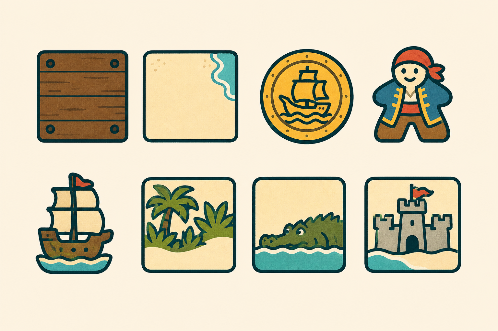
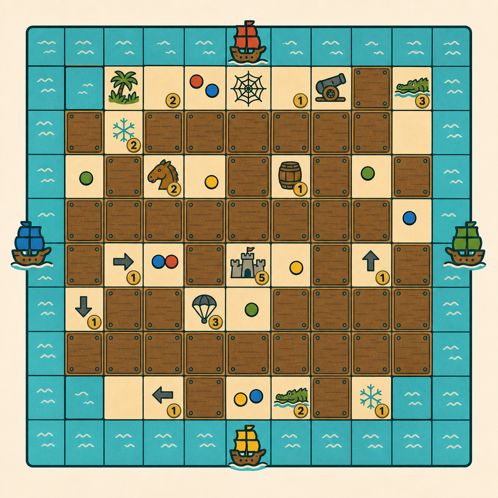
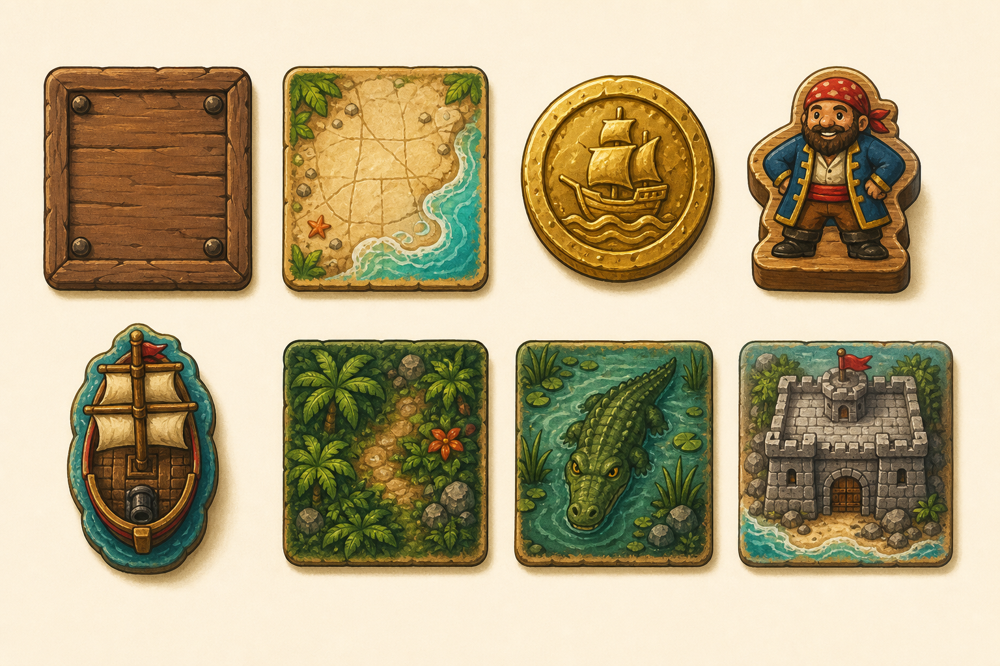

Revised Direction
Bold icons, quiet tiles
The original palette, rebuilt with flat color, oversized symbols, heavy outlines, and open space for three or more pirate pieces.

Gameplay Composition
The island in play
A mid-game density study: hidden and discovered tiles, sparse symbols, coin counters, four ships, and color-coded pirate dots. The live game remains the authority for the exact 13x13 geometry.

Concept artwork, not a rules screenshot. Final tile count and piece placement will be rendered deterministically by the game.
Legibility Check
Judge it small
These are the same generated concepts reduced to approximate desktop and mobile scale. Final production assets will be isolated individually and reserve their lower area for pirate stacks.
Design Rules
What stays consistent
Readable first
One dominant silhouette per tile, tested at actual game size.
Tactile pieces
Ships, pirates, and coins should feel like objects on a table.
Tropical color
Turquoise, teak, parchment, coral, jungle green, and brass.
No visual noise
Texture supports the icon; it never competes with game state.
Feedback
Review by asset name
Send feedback in our chat using the asset name and what should
change. For example: Crocodile: friendlier face, less dark water.
Previous Direction
Round 01 archive
Retained for palette and material reference. The illustration density is intentionally not carried forward into production.
